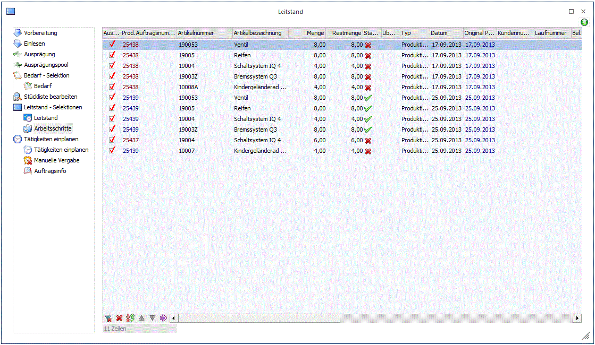

Im Register Arbeitsschritte wird nicht nur der Produktionsartikel angezeigt, sondern die einzelnen Arbeitsschritte eines Projekts. Auch hier gilt, dass nur jene Arbeitsschritte angezeigt werden, für die der angemeldete Benutzer die Berechtigung hat.

Alle Spalten sind Informationsspalten - mit Ausnahme der Spalte "Datum" (s. unten) - mit derselben Informationen wie im Register Leitstand. Nur bei einer manuellen Änderung des Datums für einen Arbeitsschritt kann von diesem Fenster aus in die Automatische Reservierung gewechselt werden (sonst ist der OK-Button gesperrt). Es kann allerdings durch Auswahl des Registers "Bearbeiten" in die Manuelle Vergabe gewechselt werden. Dort können Sie die Ressourcen für die ausgewählten Arbeitsschritte manuell zuteilen bzw. bestehende Reservierungszeilen manuell ändern.
Ø Datum
Das Datum kann für einen Arbeitsschritt manuell editiert werden. Ein manuell abgeändertes Datum wird erst mit Bestätigung mit dem OK-Button im Fenster Leitstand gespeichert und steht somit an verschiedenen Stellen im Programm zur Verfügung. Bei einem Produktionsauftrag vom Typ "Startproduktion" wird immer das „Startdatum" des jeweiligen Arbeitsschrittes und bei einer Zielproduktion immer das „Enddatum" des jeweiligen Arbeitsschrittes eingetragen.
Nach der Eingabe eines Datums für einen Arbeitsschritt und das Verlassen des Feldes wird sofort das Datum automatisch von allen anderen Arbeitsschritten in darunter- bzw. darüberliegenden Ebenen in der Stückliste geprüft und ggf. laut der Programm-Einplanungslogik entsprechend geändert. (Das Produktion-Startdatum vom Arbeitsschritt darf weder NACH dem Produktion-Startdatum vom Arbeitsschritt in der darüberliegenden Stücklisten-Ebene noch VOR dem Produktion-Startdatum vom Arbeitsschritt in der darunterliegenden Stücklisten-Ebene liegen).
Beim Speichern von einer Datumsänderung für einen Arbeitsschritt wird die Produktions-Disposition (Tabelle T014) für alle Teile in der Stückliste entsprechend upgedatet (gilt auch für Teile in darüber- bzw. darunterliegende Stücklistenebenen, wenn das Datum automatische abgeändert wurde), um somit der Materialbedarf auch an das geänderte Datum anzupassen.
Das Datumsfeld kann nicht editiert werden, wenn ein Materialentnahmeschein für den Arbeitsschritt gedruckt wurde bzw. wenn eine Teilendmeldung schon durchgeführt wurde.
Hinweis
Beim automatischen Einplanen von einem Arbeitsschritt mit Tätigkeiten werden evt. manuell geänderten Datümer überschrieben. Wie bisher wird das Datum entsprechend der Einplanungslogik und anhand der dahinterliegenden Ressourcenverfügbarkeiten berechnet und dabei neu geschrieben. Es gilt auch die allgemeine Abhängigkeitslogik bei der Einplanung, nämlich dass alle darunterliegenden Ebenen nicht NACH dem eingetragenen Datum kommen dürfen und alle darüberliegenden Ebenen nicht DAVOR kommen dürfen.
Nach erfolgten Tätigkeitens-Einplanung kann das Datumsfeld für einen Arbeitsschritt im Bereich "Arbeitsschritte" zwar wieder manuell editiert werden, dabei wird aber die Tätigkeit automatisch ausgeplant, und muss daher nochmals eingeplant werden.
Ansonsten stehen dieselben Anzeige-Funktionen wie im Register Leitstand zur Verfügung. Es kann die Verfügbarkeit der Ressourcen und der Komponenten geprüft bzw. angezeigt werden und es können auch Materialentnahmescheine usw. gedruckt werden.
Nähere Informationen zu den einzelnen Spalten entnehmen Sie bitte der oberen Beschreibung für das Register Leitstand.
Hinweis
Wenn IST-Zeiten bzw. Restmengen für einen Arbeitsschritt vorhanden sind, wird eine dementsprechende Warnmeldung beim Betreten des Datumfeldes angezeigt. In Verbindung mit dem folgenden mesonic.ini-Eintrag kann das Datum trotzdem editiert werden (oder nicht):
[Leitstand]
Warninglevel=x
Wenn x=2, kann das Datumfeld weder im Bereich "Leitstand" noch im Bereich "Arbeitsschritte" editiert werden, wenn die Warnmeldung angezeigt wird (dies ist die Rückfallseinstellung wenn der ini-Eintrag gar nicht hinterlegt ist).
Bei x=3, gilt die Sperre des Datumfelds nur für den Bereich "Arbeitsschritte". Bei x=4 wird die Warnmeldung zwar angezeigt aber das Datumsfeld bleibt editierbar.